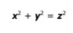
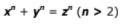
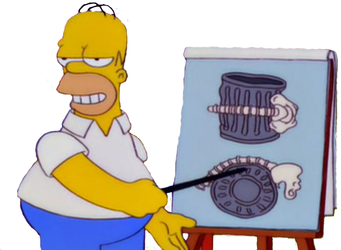

Capitulo 3: El ultimo teorema de Homero
De vez en cuando, Homero Simpson explora sus talentos inventivos, por ejemplo, crea el “Milagroso Cilindro
Medular del Doctor Homero”, que esencialmente es un cubo de basura abollado con huecos al azar que encajan
perfectamente con el contorno de las vértebras humanas.
Sin tomar el juego en serio, Bart coloca sus letras sin un orden particular, inventando la palabra Kwyjibo.
Homero comienza a perseguirlo por la casa, enfurecido, ya que se da cuenta de que la explicación que Bart
hace se refiere a él.
Promueve su invento como tratamiento para el dolor de espalda, aunque no existe la más mínima prueba que
apoye esa afirmación. Los quiroprácticos de Springfield, que se sienten insultados y temen que Homero les
robe sus pacientes, amenazan con destruir el invento de Homero, esto les permitirá de nuevo acaparar el
mercado de los problemas de espalda y promover felizmente sus propios tratamientos falsos.
Las hazañas inventivas de Homero llegan a su cénit en “El mago de Evergreen Terrace”. El título es una broma
que hace referencia al “Mago de Menlo Park”, el sobrenombre que dio un reportero a Thomas Edison cuando
estableció su laboratorio principal en Menlo Park, Nueva Jersey.
Al morir, en 1931, Edison tenía 1093 patentes de Estados Unidos a su nombre, y se había convertido en una
leyenda de la invención. El episodio se centra en la decisión de Homer de seguir los pasos de Edison.
Construye diversos artilugios que van desde una alarma que pita cada tres segundos solo para hacerte saber
que todo va bien, hasta una escopeta que aplica maquillaje disparándola directamente hacia la cara. Durante
su intensa fase de investigación y desarrollo vemos a Homer de pie ante una pizarra escribiendo algunas
ecuaciones matemáticas. Esto no debería sorprendernos, porque muchos inventores aficionados han sido buenos
matemáticos, y viceversa. En un episodio de Los Simpson titulado «La última tentación de Homer» (1993).
Newton es uno de los padres de las matemáticas modernas, pero también fue inventor a tiempo parcial.
Las fórmulas matemáticas que escribe Homero en la pizarra las introdujo en el guion David S. Cohen, que
formaba parte de una nueva generación de guionistas con formación matemática que se unieron a Los Simpson a
mediados de los noventa. Como Al Jean y Mike Reiss, Cohen había exhibido un auténtico talento para las
matemáticas a edad temprana. En casa, leía habitualmente el ejemplar de Scientific American de su padre y
jugaba a resolver los enigmas matemáticos de la columna mensual de Martin Gardner.
Si comprueban estos números y los introducen en la ecuación 4, predice una masa de 775 gigaelectrovoltios
(GeV), que es sustancialmente más elevada que los 125 GeV que se estimaron cuando se descubrió el bosón de
Higgs en 2012. Sin embargo, 775 GeV no era una mala suposición, sobre todo teniendo presente que Homero es
solo un inventor aficionado, y que realizó sus cálculos catorce años antes de que los físicos del CERN, la
tercera ecuación concierne a la densidad del universo, cosa que tiene sus implicaciones en cuanto a su
destino. Si Ω(t0) es mayor que 1, como inicialmente ha escrito Homero, entonces eso significa que el
universo acabará haciendo implosión bajo su propio peso.
Homero entonces altera el signo de desigualdad, de modo que la ecuación pasa de Ω(t0) > 1 a Ω(t0) 1.
Cosmológicamente, la nueva ecuación sugiere un universo que se expande eternamente, resultando en algo
similar a una eterna explosión cósmica.
La cuarta línea de la pizarra es una serie de cuatro diagramas matemáticos que muestran una
rosquilla convirtiéndose en una esfera. Esta línea se refiere a una parte de las matemáticas llamada
topología. Para entender estos diagramas, es necesario saber que un cuadrado y un círculo son
idénticos el uno al otro, según las normas de la topología. Se consideran “homeomórficos”, o gemelos
topológicos, porque un cuadrado dibujado en una lámina de goma se puede convertir en un círculo,
estirándolo con cuidado. En realidad, a veces se conoce a la topología como “geometría de la lámina
elástica”.
A lo mejor los topólogos corrientes no se sienten demasiado emocionados al ver uno de sus más amados
teoremas convertido en humo, pero una rosquilla y una esfera son idénticos, según las personales
normas de la topología de Homero. Quizá el término correcto no sea “homeomórfico”, sino
“Homeromórfico”.
La ecuación parece inocua a primera vista, a menos que sepan algo de la historia de las matemáticas,
en cuyo caso estarán a punto de destrozar su regla de cálculo, llenos de indignación. ¡Porque parece
que Homero ha logrado lo imposible y ha encontrado una solución al notable misterio del último
teorema de Fermat! Pierre de Fermat propuso su teorema alrededor de 1637. Trabajando aisladamente en
su casa, en el sur de Francia, su única compañía matemática era un libro llamado Aritmética, escrito
por Diofanto de Alejandría en el siglo III d. C. Leyendo aquel texto griego antiguo, Fermat vio la
siguiente ecuación:

Esta ecuación está estrechamente relacionada con el teorema de Pitágoras, pero Diofanto no estaba interesado
en triángulos ni en la longitud de sus lados. Fermat ya estaba familiarizado con las técnicas requeridas
para encontrar tales soluciones, y también sabía que la ecuación tenía un número infinito de soluciones.
No encontró una serie de números que coincidiesen con una de esas ecuaciones, sino que desarrolló un
argumento que probaba que tales soluciones no existían. El hijo de Fermat, Clément-Samuel, encontró más
tarde el ejemplar de su padre de la Aritmética y vio aquella intrigante nota al margen. También vio muchos
apuntes similares en los márgenes, porque Fermat tenía la costumbre de asegurar que podía probar algo
notable, pero raramente escribía las pruebas.
Esto impulsó a la comunidad matemática a encontrar las pruebas que faltaban asociadas con cada una de sus
afirmaciones, y una a una confirmaron que las afirmaciones de Fermat eran correctas. Pero nadie pudo probar
que no había solución a la ecuación. Fermat como “un enigma que quizá nunca resolvamos”.
Sin embargo, el capitán Picard estaba equivocado y anticuado, porque el episodio estaba ambientado en el
siglo veinticuatro, y el teorema en realidad fue probado en 1995 por Andrew Wiles en la Universidad de
Princeton5, Wiles había soñado con abordar el desafío de Fermat ya desde que tenía diez años. El problema
llevaba tres décadas obsesionándole, y culminó en siete años de trabajo en un secreto absoluto. Al final
consiguió probar que la ecuación.

De modo que, para resumir, en el siglo XVII, Pierre de Fermat establece que puede probar que la ecuación no
tiene solución con números enteros. En 1995, Andrew Wiles descubre una nueva prueba que verifica la
afirmación de Fermat. En 2010, el Doctor revela la prueba original de Fermat. Todo el mundo está de acuerdo
en que la ecuación no tiene soluciones.
